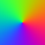

Binary atan native vs guarded
WebGL guarded

WebGPU native

WebGPU guarded

WebGL case strip: native / guarded
WebGPU case strip: native / guarded


- 0: (1, 2)
- 1: (2, 1)
- 2: (1, -2)
- 3: (2, -1)
- 4: (-1, -2)
- 5: (-2, -1)
- 6: (-1, 2)
- 7: (-2, 1)
- 8: (0, 1)
- 9: (0, -1)
- 10: (1, 0)
- 11: (-1, 0)
- 12: (0, -1)
- 13: (-0, -1)
- 14: (0, 1)
- 15: (-0, 1)
- 16: (0.000001, 0.000001)
- 17: (-0.000001, 0.000001)
- 18: (1e-20, -1e-20)
- 19: (0.000001, -1)
- 20: (-0.000001, -1)
- 21: (0, 0)